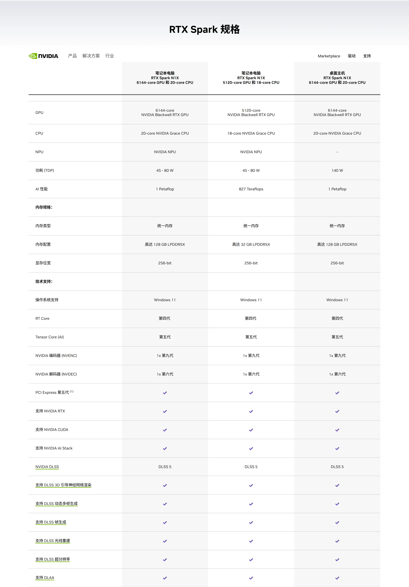
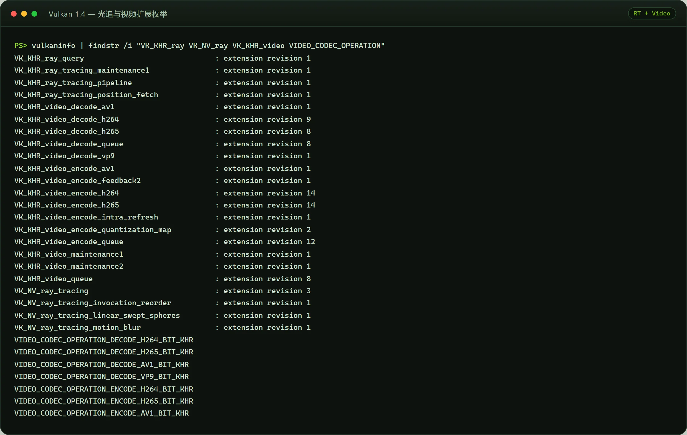

一句话：图形与媒体能力全部复现，AI 性能与 TDP 未独立实测
- ✓RTX / 光追 第四代 RT Core、DX12 Ultimate、Vulkan RT官方规格 + 本机 dxdiag Feature Level 12_2 + Vulkan ray_query / ray_tracing_pipeline
- ✓Tensor / DLSS 第五代 Tensor Core、DLSS 5 全套官方 6 个子项全勾；DriverStore 有 NGX 运行时组件
- ✓NVENC 1× 第九代；H.264 / HEVC / AV1 编码7/7 实测通过，含 H.264 / HEVC 4:2:2 与 4:4:4
- ✓NVDEC 1× 第六代；H.264 / HEVC / AV1 解码6/7 实测通过；H.264 4:4:4 为 NVDEC 色度格式不支持
- ✓平台 / API CUDA 12.1 · sm_121 · 驱动 621.40 · CUDA UMD 13.5官方页、驱动枚举、原始日志三方交叉核对
64 GiB 是物理统一内存；Windows 可见 32.18 GiB，GPU 专用帧缓冲 30.50 GiB，其余约 1.32 GiB 为固件/保留。CUDA 可寻址 45.92 GiB 是地址空间口径。
官方表桌面 6144/20 档的 NPU 栏为 “-”；本机 Windows 也未枚举到 NPU 设备。带 NVIDIA NPU 的是两个笔记本档。
官方规格为 PCIe Gen5。nvidia-smi 当前显示 1×Gen1（设备/主机最大 Gen5），且 C2C Mode Enabled；这是链路当前读数，不代表 Gen5 能力缺失。
官方规格页：三档并列，能力条目齐全
以下为 NVIDIA 中国官网规格页的连续长图（2026-11-26 抓取）：三档并列，第三列为桌面主机档，也是本机对应档位。官方页面：nvidia.cn/products/rtx-spark/specifications；归档见 中文 HTML · PDF · 英文 HTML。

官方 DLSS 不是只写了一个 “支持”。规格页把 DLSS 5 拆成 6 个子项逐条打勾；这与本机 DriverStore 中的 NGX 运行时组件相互印证。真正游戏内的帧生成/超分帧率仍取决于具体游戏是否调用 DLSS。
这台机器，对应官方哪一档？
NVIDIA 规格页并列三档：笔记本 6144/20、笔记本 5120/18、桌面主机 6144/20。ASUS GR1X 是 AC 供电的 mini PC，CPU / GPU 为 20 核 / 6144 核，落在第三列；官方桌面档 NPU 为 “-”，也与本机未枚举到 NPU 一致。
| 机型 | ASUS GR1X（ASUS N1X 平台） |
| SoC | NVIDIA RTX Spark N1X |
| 官方档位 | 桌面主机 · 6144-core GPU + 20-core CPU |
| 主板 / BIOS | ASUSTeK GR1X · GR1XN1XN.0015.2026.1109.1040（2026-11-09） |
| 操作系统 | Windows 11 Pro 26H1 · Build 28000.3501 · ARM64 |
| GPU 驱动 | 621.40（KMD 621.40）· CUDA UMD 13.5 |
| GPU VBIOS | 9A.0B.37.00.04 · Device ID 2E1310DE |
| 采集时间 | 2026-11-26 11:58–14:12（UTC+8） |
① 官方第三列是 6144-core / 20-core；本机 nvidia-smi 与 CUDA 属性完全一致。
② 官方第三列 NPU 为 “-”；本机 PnP 设备中没有 NPU / Neural / AI accelerator。
③ 整机 AC 供电、无电池，属于桌面 mini PC，而不是 45–80 W 的笔记本档。
官方 vs 本机：28 项逐条核对
判定标准：“一致” 表示官方条目在本机可被驱动/系统 API 或实测复现；“实测” 表示官方表未列、由本机读取；“说明” 表示口径差异，不是能力缺失。
| 项目 | 官方规格（桌面档） | 本机读取 / 实测 | 判定 |
|---|---|---|---|
| 计算与图形 | |||
| GPU 型号 | 6144-core NVIDIA Blackwell RTX GPU | nvidia-smi 同名字；48 SM / 6,144 CUDA | 一致 |
| CUDA 核心 | 6,144 | 6,144（48 SM × 128） | 一致 |
| SM 数量 | 官方未列 | 48 | 实测 |
| 计算能力 | CUDA 12.1 | sm_121（12.1） | 一致 |
| RT Core | 第四代 | Vulkan ray_query / ray_tracing_pipeline；DX12 FL 12_2 | 一致 |
| Tensor Core | 第五代 | DLSS / NGX 运行时存在 | 一致 |
| AI 性能 | 1 PFLOP（FP4） | 项目推算 FP4 稠密 473.8 / 稀疏 947.6 TFLOPS（非实测） | 官方 + 推算 |
| TDP | 140 W | 空闲采样 GPU 3.96 W（整机 TDP 未复测） | 官方值 |
| 媒体引擎 | |||
| NVENC | 1× 第九代 | ffmpeg：h264_nvenc / hevc_nvenc / av1_nvenc | 一致 |
| NVDEC | 1× 第六代 | ffmpeg：h264_cuvid / hevc_cuvid / av1_cuvid 等 | 一致 |
| 编码实测 | H.264 / HEVC / AV1；H.264 / HEVC 覆盖 4:2:2 与 4:4:4 | 7 / 7 通过 | 通过 |
| 解码实测 | H.264 / HEVC / AV1 | 6 / 7 通过；H.264 4:4:4 解码报 NVDEC 色度格式不支持 | 符合矩阵 |
| NVENC 并发会话 | 12（官方矩阵） | 12 路并发成功；第 13 路被拒（OpenEncodeSessionEx） | 实测 |
| 内存 | |||
| 内存类型 / 容量 | 统一 LPDDR5X；最高 128 GB | 64 GB LPDDR5X-9400（本机配置） | 符合（本机 64 GiB 配置；官方最高 128 GB） |
| 显存位宽 | 256-bit | SMBIOS 单器件上报 32-bit；官方为 SoC 总位宽 256-bit | 说明 |
| Windows 可见内存 | 官方未列 | 32.18 GiB | 实测 |
| GPU 帧缓冲 | 官方未列 | 30.50 GiB（31,232 MiB） | 实测 |
| CUDA 可寻址 | 官方未列 | 45.92 GiB | 实测 |
| D2D 带宽 | 官方未列 | 118.1 GB/s 单向 / 236.2 GB/s 合计（cuda_bench.py · cuMemcpyDtoD） | 实测 |
| 平台与 IO | |||
| CPU | 20-core NVIDIA Grace CPU | 20C / 20T · 最高 3900 MHz · L2 25.0 MB · L3 24.0 MB | 一致 |
| NPU | 桌面档 “-” | Windows 未枚举到 NPU 设备 | 一致（无） |
| PCIe | 第五代 | 当前 1×Gen1；设备/主机最大 Gen5；C2C Enabled | 说明 |
| 操作系统 | Windows 11 | Windows 11 Pro 26H1 · Build 28000.3501 · ARM64 | 一致 |
| DLSS | DLSS 5 + 全套特性 | NGX dlssg 310.2.1.0 / dlssd 310.9.0.0 | 一致 |
| DirectX 12 Ultimate | 支持 | Feature Levels 12_2 | 一致 |
| Vulkan RT / OpenGL | 支持 | Vulkan 1.4.357 · RT 扩展齐全 | 一致 |
| CUDA 能力 | 12.1 | 12.1 | 一致 |
| 驱动 | 官方未列 | 621.40 · CUDA UMD 13.5 | 实测 |
注：CUDA 可寻址 45.92 GiB 与 GPU 专用帧缓冲 30.50 GiB 不是同一口径；前者是 CUDA 进程可见的可分配地址空间，后者是 nvidia-smi 报告的专用 FB。二者不能相加为物理内存。
1 条 PCIe 1.0 lane（2.5 GT/s，理论约 250 MB/s 每方向）。这是 nvidia-smi 的当前链路读数；设备/主机最大 Gen5，不代表 GPU 只有 Gen1。
Chip-to-Chip，SoC 内 CPU-GPU 的一致性互连（NVLink-C2C）。本机 C2C Mode Enabled，统一内存访问由此受益。
SMBIOS 报的是单器件位宽；官方 256-bit 是 SoC 总位宽。256 / 32 = 8，说明 WMI 报的不是总线总位宽，两者不能直接比较。
H.264 4:4:4 的“解码不支持”怎么测：h264_nvenc 编码成功；再用 h264_cuvid 解码，ffmpeg 报 Codec h264_cuvid is not supported with this chroma format。属 NVDEC 色度格式不支持，不是文件损坏或脚本错误。详见 06 媒体。
48 个 SM，6,144 个 CUDA 核心
官方只写 6144-core；本机 CUDA 运行时给出 48 个 SM、计算能力 12.1、24 MiB L2。按 Blackwell 每 SM 128 个 CUDA 核心计算，48 × 128 = 6,144，与官方数字闭合。
| CUDA 设备属性 | 本机值 |
|---|---|
| 每 SM CUDA 核心 | 128（48 × 128 = 6,144） |
| 最大线程 / 块 | 1,024 |
| 最大线程 / SM | 1,536 |
| 共享内存 / SM | 102,400 B（100 KiB） |
| 共享内存 / 块（opt-in） | 101,376 B（99 KiB） |
| 寄存器 / SM | 65,536 |
| Warp 大小 | 32 |
| L2 缓存 | 25,165,824 B（24 MiB） |
算力口径要分清。官方产品页明确 1 PFLOP 是 FP4 AI 性能；规格页只写 1 Petaflop。本报告不把 1 PFLOP 当成 FP16/FP8 的实测值。
可复现的本地证据是：CUDA 12.1 / sm_121、48 SM、24 MiB L2，以及 PyTorch 2.14.1+cu130 可以在本机枚举到 45.92 GiB 的 CUDA 配额；最大单次分配 45.75 GiB（3/3 会话），46.0 GiB 失败。
来源：logs/cuda-props.json · logs/nvidia-smi-q.txt
FP4 算力：官方口径与项目推算
| FP4 口径 | 数值 | 性质 / 方法 |
|---|---|---|
| 官方 AI 性能 | 1 PFLOP | NVIDIA 产品页：“up to 1 petaflop FP4 AI performance” |
| 项目推算 FP4 稠密 | 473.8 TFLOPS | 48 SM × 2.41 GHz × Blackwell 每 SM FP4 吞吐比率；推算，非实测 |
| 项目推算 FP4 稀疏（2:4） | 947.6 TFLOPS | 稠密 × 2（2:4 结构化稀疏）；推算，非实测 |
| 按最高 Boost 重算 | 590.4 TFLOPS 稠密 / ≈1.18 PFLOPS 稀疏 | 3.003 GHz 重算；仍为推算 |
| 直接 FP4 GEMM 实测 | 未取得 | PyTorch 2.14.1+cu130 无 FP4 GEMM 路径 |
方法说明：项目内既有 bench/make_report_v13.py / bench/blackwell.txt 以 48 SM、2.41 GHz（Geekbench 负载观测值）和 Blackwell 每 SM 的 FP4/FP8 吞吐比率外推；2:4 稀疏按 2× 计。这里借用的是“项目内推算结果”，不是本次新增的 FP4 GEMM 实测，也不把 473.8/947.6 当作硬件实测上限。
64 GiB 统一内存，为什么 Windows 只看到 32 GB
这不是“少了 32 GB”，而是统一内存被固件切成系统可见区与 GPU 专用帧缓冲。下面几套数字同时成立，只是口径不同。
| 口径 | 数值 | 来源 / 说明 |
|---|---|---|
| 物理统一内存 | 64.00 GiB | SMBIOS：68,719,476,736 B，Samsung LPDDR5X，9,400 MT/s |
| Windows 可见 | 32.18 GiB | Win32_ComputerSystem / TotalVisibleMemorySize |
| GPU 专用帧缓冲 | 30.50 GiB | nvidia-smi：31,232 MiB |
| 固件/保留（差额） | ≈ 1.32 GiB | 64 − 32.18 − 30.50 |
| CUDA 可寻址 | 45.92 GiB | cuMemGetInfo total；CUDA 进程可见地址空间，不是额外物理内存 |
为什么 SMBIOS 写 32-bit：SMBIOS Type 17 的 Data Width / Total Width 是单个内存器件/模组字段；本机 LPDDR5X 为板载，WMI 只枚举到 1 个 DIMM0，所以报 32-bit。官方 256-bit 是 SoC 内存控制器侧总位宽；256 / 32 = 8，说明 WMI 报的不是总线总位宽，两者不能直接比较。
带宽实测
主口径采用 GB10 官方 273 GB/s（8,533 MT/s），D2D 读+写效率约 86.5%；按本机 SMBIOS 的 9,400 MT/s × 256-bit 计算为 300.8 GB/s，对应约 78.5%，作为替代口径并列。页可达 H2D 为 16.9 GB/s。引用百分比时要写明分母。来源：logs/bandwidth.txt。
第九代 NVENC / 第六代 NVDEC：不是“支持”，是实际编解通过
官方矩阵给出 N1X 的完整编解码列；本机用 ffmpeg 原生 ARM64（N-129288，2026-11-25 构建）做 1080p60 / 5 s testsrc2 实测。编码用 NVENC preset p5、VBR CQ；解码用对应 cuvid 解码器。
| 格式 | 编码（NVENC 第九代） | 解码（NVDEC 第六代） |
|---|---|---|
| H.264 / AVC | 4:2:0 / 4:2:2 / 4:4:4 / lossless | 4:2:0 / 4:2:2 |
| HEVC / H.265 | 4:2:0 / 4:2:2 / 4:4:4 / 10-bit / 8K / B 帧 / lossless | 4:2:0 / 4:2:2 / 4:4:4（8/10/12-bit） |
| AV1 | 4:2:0 | 4:2:0 8/10-bit |
| VP9 / VP8 | — | VP9 8/10/12-bit；VP8 |
| MPEG-1/2/4、VC-1 | — | 全部支持 |
以上为 NVIDIA 官方编解码支持矩阵中 “NVIDIA RTX Spark N1X” 行，按格式合并；矩阵中编码与解码对应列均为 YES。单卡最大并发 NVENC 会话为 12。
实测结果与方法（1080p60 / 5 s / 300 帧）
工具：ffmpeg N-129288-gc81e35cf2b-20261125（原生 ARM64）；编码用 NVENC preset p5 / VBR，CQ 23（H.264）、24（HEVC）、30（AV1）；解码用 h264_cuvid / hevc_cuvid / av1_cuvid + -f null -。
素材：testsrc2 1920×1080@60，5.000 s（300 帧）。速度口径：ffmpeg speed 为相对实时倍数；墙钟含 lavfi 合成与进程启动，不是纯编码器峰值。
| 测试 | 像素格式 | 编码 | 平均码率 | 解码 |
|---|---|---|---|---|
| H.264 4:2:0 8-bit | yuv420p |
通过 4.38× / 1.27s | 20.6 Mbps | 通过 23.3× / 0.50s |
| HEVC 4:2:0 10-bit | yuv420p10le |
通过 6.46× / 0.91s | 16.4 Mbps | 通过 20.6× / 0.37s |
| AV1 4:2:0 8-bit | yuv420p |
通过 6.14× / 0.99s | 17.9 Mbps | 通过 18.8× / 0.41s |
| H.264 4:2:2 8-bit | yuv422p |
通过 4.41× / 1.29s | 22.3 Mbps | 通过 21.5× / 0.38s |
| HEVC 4:2:2 10-bit | yuv422p10le |
通过 6.33× / 0.93s | 16.8 Mbps | 通过 15.6× / 0.46s |
| H.264 4:4:4 8-bit | yuv444p |
通过 4.26× / 1.33s | 24.3 Mbps | 不支持 色度格式不支持 |
| HEVC 4:4:4 10-bit | yuv444p10le |
通过 5.91× / 1.02s | 17.2 Mbps | 通过 11.4× / 0.58s |
H.264 4:4:4 的“不支持”是解码路径：h264_nvenc 先编码成功；h264_cuvid 打开解码器时报 Codec h264_cuvid is not supported with this chroma format（EINVAL）。这是 NVDEC 不支持该色度格式，不是文件损坏或脚本错误；官方矩阵也只列 H.264 解码 4:2:0 / 4:2:2。
图注：横轴为相对实时的倍数（×），绿色为编码、蓝色为解码；条越长越快。H.264 4:4:4 只有编码条，解码因 NVDEC 不支持该色度格式而缺失。
H.264 4:2:0 / 4:2:2 / 4:4:4、HEVC 4:2:0 10-bit / 4:2:2 10-bit / 4:4:4 10-bit、AV1 4:2:0 全部成功。
H.264 4:2:0 / 4:2:2、HEVC 4:2:0 / 4:2:2 / 4:4:4、AV1 通过；H.264 4:4:4 不在 NVDEC 支持范围。
HEVC 4:2:2 10-bit 的编码与解码都通过，HEVC 4:4:4 10-bit 也通过；说明 HEVC 的 4:2:2 / 4:4:4 路径实际可用（H.264 4:4:4 解码除外）。
并发会话实测：12 路成功，第 13 路被拒。12 个 720p30 NVENC 进程同时编码全部返回 0；第 13 路报 OpenEncodeSessionEx failed: incompatible client key (21)。与官方矩阵的 12 路上限一致。完整日志：logs/nvenc/。


logs/codec/。RTX 功能：光追管线与 DLSS 运行时
官方：第四代 RT Core、第五代 Tensor Core、DLSS 5 全套、DX12 Ultimate、Vulkan RT API。本机：dxdiag Feature Level 12_2；Vulkan 枚举到 ray_query / ray_tracing_pipeline；DLSS 的 NGX 运行时组件在 DriverStore。


边界说明：本报告验证的是“官方支持 + 运行时存在 + 光追 API 可用”。没有在支持 DLSS 的游戏中做帧生成/超分的帧率实测，因此不把 DLSS 5 的官方能力当成某个游戏的实测提升幅度。
CPU、存储与 IO
20 核 Grace CPU、两个 10 核集群、最高 3.9 GHz；2 TB NVMe；10GbE + Wi-Fi 7。整机 AC 供电，属于桌面 mini PC。
| 子系统 | 本机配置 | 来源 / 备注 |
|---|---|---|
| CPU | NVIDIA RTX Spark N1X · 20C / 20T · 最高 3900 MHz | Win32_Processor；官方 20-core Grace CPU |
| CPU 缓存 | L2 25,600 KB · L3 24,576 KB | WMI |
| 内存 | 64 GiB LPDDR5X-9400（Samsung，DIMM0） | SMBIOS；官方 256-bit |
| 存储 | Micron MTFDKBA2T0QGN-1BN1AABGA · 2,048,407,280,640 B（约 1.86 TiB） | Win32_DiskDrive |
| 有线网络 | Realtek PCIe 10GbE（采集时链路 1 Gbps） | Win32_NetworkAdapter |
| 无线 | MediaTek Wi-Fi 7 MT7925 + Bluetooth | Win32_NetworkAdapter |
| NPU | 未枚举到 NPU 设备 | 官方桌面档 NPU 为 “-”；笔记本档才有 NVIDIA NPU |
| PCIe / 互联 | 官方 Gen5；本机当前 1×Gen1，设备/主机最大 Gen5；C2C Enabled | nvidia-smi 当前读数；设备/主机最大 Gen5 |
CPU 的 “两个 10 核集群” 来自 Geekbench 7 sysinfo（2026-11-25）；本文不把具体微架构名称（如 X925 / A725）当作本次实测结论，因为官方规格页只称 “20-core NVIDIA Grace CPU”。
测试方法、原始数据与口径
所有数字均可回溯到本目录下的日志或官方页面。命令、参数与原始输出如下。
采集与验证命令
# GPU / 驱动 / 显存 / 编码器状态 nvidia-smi nvidia-smi -q vulkaninfo # 系统与显示 dxdiag /t logs\dxdiag.txt # CUDA 设备属性 + 带宽 python tools\cuda_props.py python tools\cuda_bench.py # 编解码实测 + 并发会话 python tools\codec_tests.py python tools\concurrent_nvenc.py
测试条件
-b:v 0-f null --re）+ 第 13 路；验证 NVENC 会话上限口径与限制
- 编码速度为端到端：包含 lavfi 合成、像素格式转换与进程启动，不是纯 NVENC 硬件峰值。
- 解码速度为相对实时（ffmpeg speed）；H.264 4:4:4 解码失败是色度格式不支持，不是驱动崩溃。
- DLSS 只验证官方支持、NGX 运行时与 API 可用；未在支持 DLSS 的游戏中做帧生成/超分实测。
- AI 性能 1 PFLOP 为 NVIDIA 官方 FP4 口径；FP4 稠密 473.8 / 稀疏 947.6 TFLOPS 是项目内按 48 SM × 2.41 GHz 外推的推算值，不是本次实测。TDP 140 W 同为官方规格；本次没有做整机满载功耗与峰值算力复测。
- NVENC 并发会话实测：12 路成功，第 13 路被拒（
OpenEncodeSessionEx failed: incompatible client key (21)），与官方矩阵 12 路一致。 - 内存理论峰值主口径采用 GB10 官方 273 GB/s（8,533 MT/s）；按本机 SMBIOS 9,400 MT/s × 256-bit 计算的 300.8 GB/s 作为替代口径并列。
- PCIe 当前 1×Gen1 是 nvidia-smi 读数；设备/主机最大 Gen5，官方规格为 PCIe Gen5，C2C Mode Enabled。
原始文件
| 文件 | 内容 |
|---|---|
| spec/…zh.html · spec/…zh.pdf | 官方规格页归档（中文） |
| spec/nvidia-video-codec-matrix.html | NVIDIA 官方编解码支持矩阵归档 |
| 原始日志 | 未随公开站点发布，保留在作者本地 |